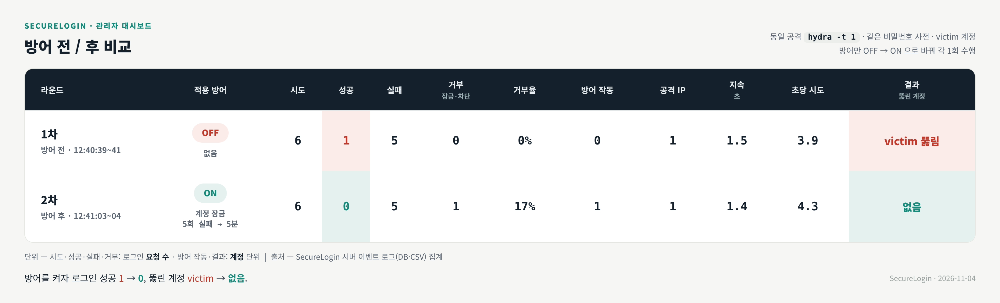
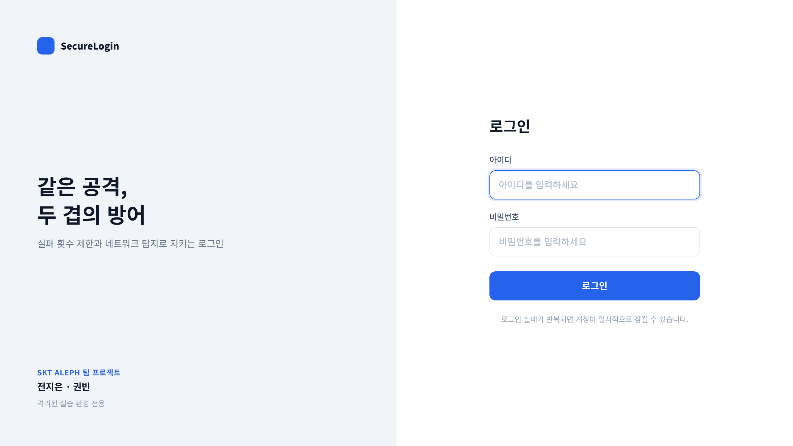
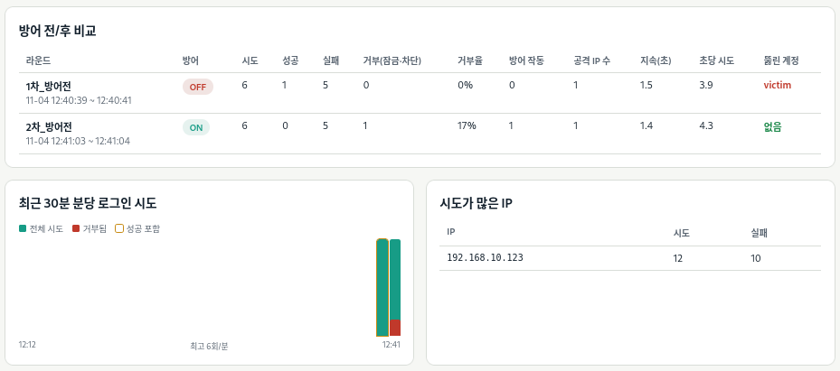
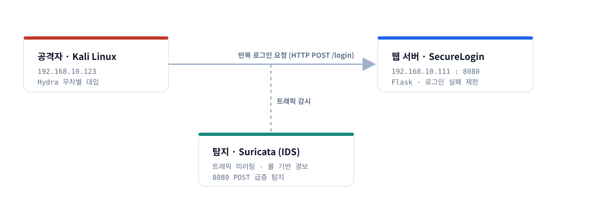
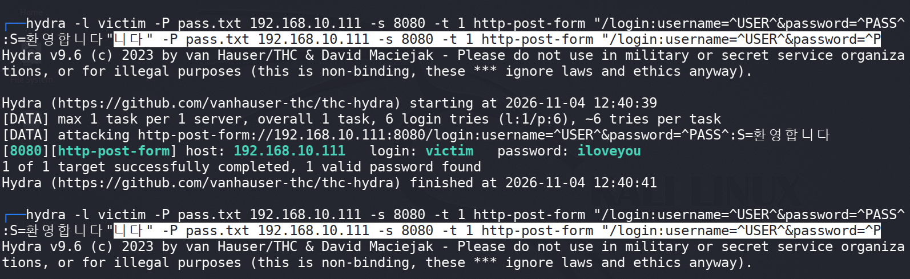
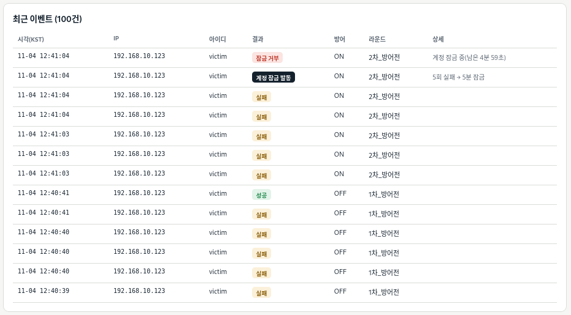

반복 로그인(무차별 대입) 공격을 웹(차단)과 네트워크(탐지) 두 층에서 막고, 같은 조건에서 방어 전/후를 비교해 효과를 데이터로 증명했습니다.
동일한 공격(hydra -t 1, 같은 비밀번호 사전)을 방어만 바꿔 두 번 수행

| 항목 | 방어 OFF | 방어 ON |
|---|---|---|
| 적용 방어 | 없음 | 계정 잠금 (5회 실패 → 5분) |
| 로그인 성공 | 1 | 0 |
| 뚫린 계정 | victim 탈취 | 없음 |
Flask·SQLite로 구축. 비밀번호는 해시로 저장하고, 없는 아이디도 더미 해시로 비교해 아이디 노출·응답 시간 차이를 방지.
계정 10분 5회 실패 → 5분 잠금, IP 10분 20회 실패 → 10분 차단. 잠금 중에는 올바른 비밀번호도 거부.
모든 로그인 시도를 DB·로그(KST)에 기록하고 CSV로 내보내기.
방어 ON/OFF 전환, 라운드별 방어 전/후 자동 비교표, 분당 시도 그래프, 상위 IP, 최근 이벤트.


네트워크에서 알아채고(탐지), 웹에서 끊는(차단) 심층 방어(Defense in Depth)

Hydra로 victim 계정에 사전 공격 수행


권빈 · 웹 층 — 로그인 사이트, 실패 제한, 이벤트 기록, 관리자 대시보드
전지은 · 네트워크 층 — Hydra 공격, Suricata 탐지, 망 구성